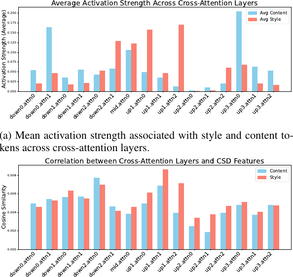
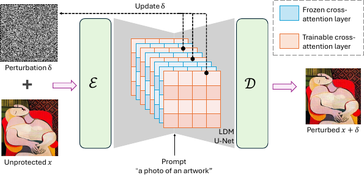
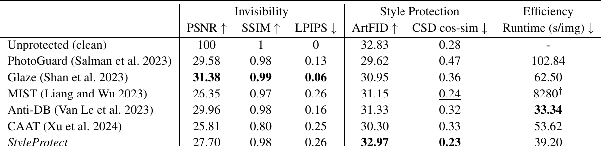
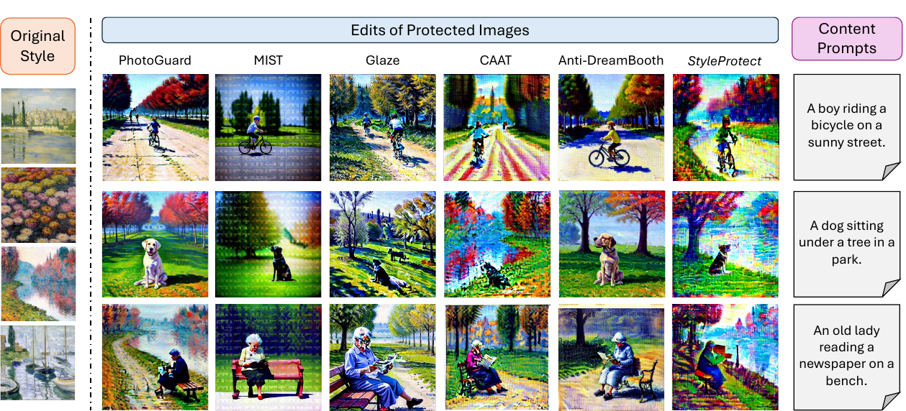
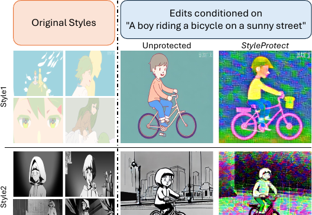

StyleProtect: Safeguarding Artistic Identity in Fine-tuned Diffusion Models
Abstract
Artistic style embodies not only aesthetic choices but also the culmination of an artist's creative identity, vision, and years of practice. The emergence of generative AI, especially diffusion-based models, has introduced new risks by making it possible to imitate these styles with little cost. While general-purpose diffusion models already demonstrate strong capabilities in reproducing stylistic patterns, finetuning further strengthens this ability, allowing models to internalize and replicate an artist's style with greater precision and flexibility. This growing risk of style mimicry underscores the need for effective and efficient protection of artistic works. We hypothesize that certain layers in the diffusion model exhibit heightened sensitivity to artistic styles and can be used to learn efficient yet effective style protection. We propose to measure sensitivity through activation strengths of attention layers in response to style and content representations, and assessing their correlations with features extracted from external models. Based on our findings, we introduce an efficient and lightweight protection strategy, StyleProtect, that achieves effective style defense against finetuned diffusion models by updating only selected cross-attention layers. Our experiments utilize a carefully curated artwork dataset based on WikiArt, comprising representative works from 30 artists known for their distinctive and influential styles and cartoon animations from the Anita dataset. The proposed method demonstrates promising performance in safeguarding unique styles of artworks and anime from malicious diffusion customization, while being efficient and maintaining imperceptibility.
Method
Middle cross-attention layers in Stable Diffusion respond more strongly to style than to content. StyleProtect finetunes only those layers and learns an ℓ∞-bounded perturbation that suppresses the style signal.

Mid-level cross-attention layers are more sensitive to style tokens than to content tokens.

Pipeline: freeze most of the U-Net, update style-sensitive cross-attention layers, and optimize perturbation δ.
Results
On a curated WikiArt subset of 30 artists, StyleProtect attains the strongest style protection (highest ArtFID, lowest CSD) among compared methods, with competitive imperceptibility and the second-fastest runtime.


DreamBooth edits targeting Monet's style. StyleProtect yields the most disrupted mimicry.

The same protection also disrupts cartoon-style mimicry on the Anita dataset.
BibTeX
@InProceedings{Tang_2026_CVPR,
author = {Tang, Qiuyu and Krinsky, Joshua and Bharati, Aparna},
title = {StyleProtect: Safeguarding Artistic Identity in Finetuned Diffusion Models},
booktitle = {Proceedings of the IEEE/CVF Conference on Computer Vision and Pattern Recognition (CVPR) Workshops},
month = {June},
year = {2026},
pages = {10759-10769}
}